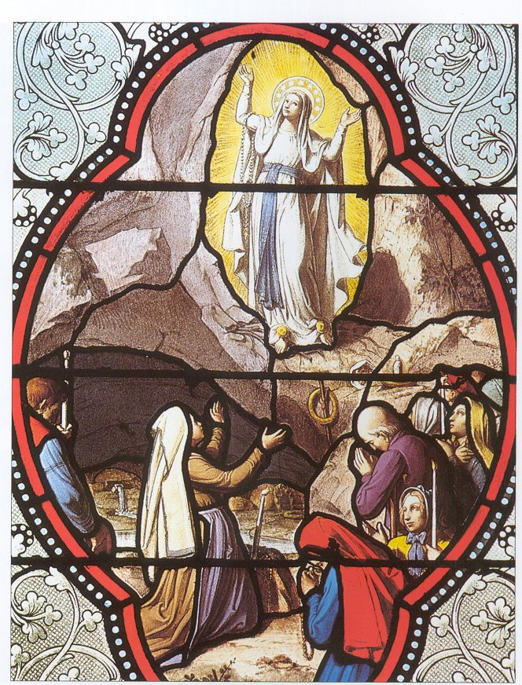

Introduction
The purpose of this web page is to investigate why youths do not attend mass nowadays. To find this out I had to do a certain amount of research, this involved interviews and questionnaires.

The InterviewA priest in my parish did this interview. He answered all my questions and was able to provide very important information for my web page.
Questionnaires
For the web page I made two questionnaires, these questionnaires were then given to a class of ten students who are under twenty. These questionnaires were extremely useful as they allowed me to understand why some youths do not attend mass.
I would like to thank the priest who participated in my interview, he was able to tell me the churches views on why youths are not going to mass.
I would also like to thank those who answered the questionnaires, without these I could not obtain sufficient information for my report.
<Previous> <Index> <Next>